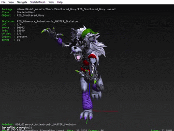

During the years of playing games, I have become fond of learning how games work internally. With this being said, through the years Ive taught myself a very complicated, and some may say a time consuming, hobby. Yes, I enjoy playing games but ive always been fasinated on learning different games design being the coding itself and the different assets it has to offer. This being: Audio, Textures, Animations, Models, etc. For are the easiest to understand has been 'Unreal Engine' Games. 'Unreal Engine' is a game engine created by 'Epic Games'. This program enables game developers and creators to create next-generation real-time 3D content and experiences. The engine has amazing graphic quality & usability. And even uses the C++ programming language.
One game in preticular which has been stuck with me since launch has been 'FNAF Security Breach' by Steel Wool Studios.
There is a number of reasons why this game is special to me and why it has helped with the information above.
Firstly, this game has drawn me into datamining more then other games becuase of the uniquenesses of the games animations, sounds and loving characters.
Secondly, this game has always been with me when times are low and has always been a fun experience to break / glitch different features to understand the inner mechanics.

Model / Animation Above: © Steel Wool Studios